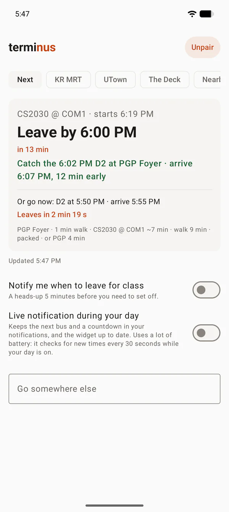
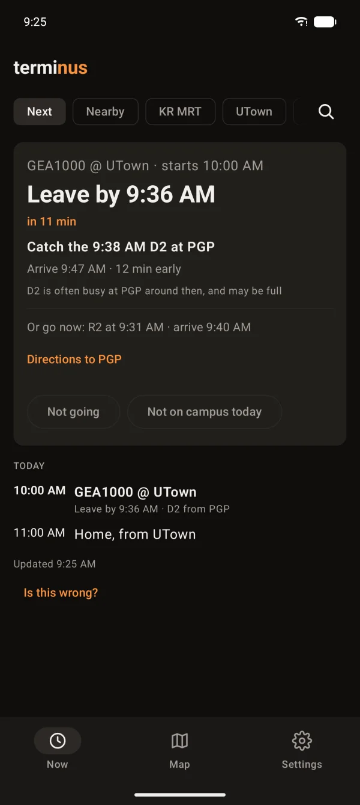

terminus
terminusKnow when
to run.
Your timetable in, one answer out: which shuttle, from which stop, and when to leave. Or when walking is faster.


terminusYour timetable in, one answer out: which shuttle, from which stop, and when to leave. Or when walking is faster.

